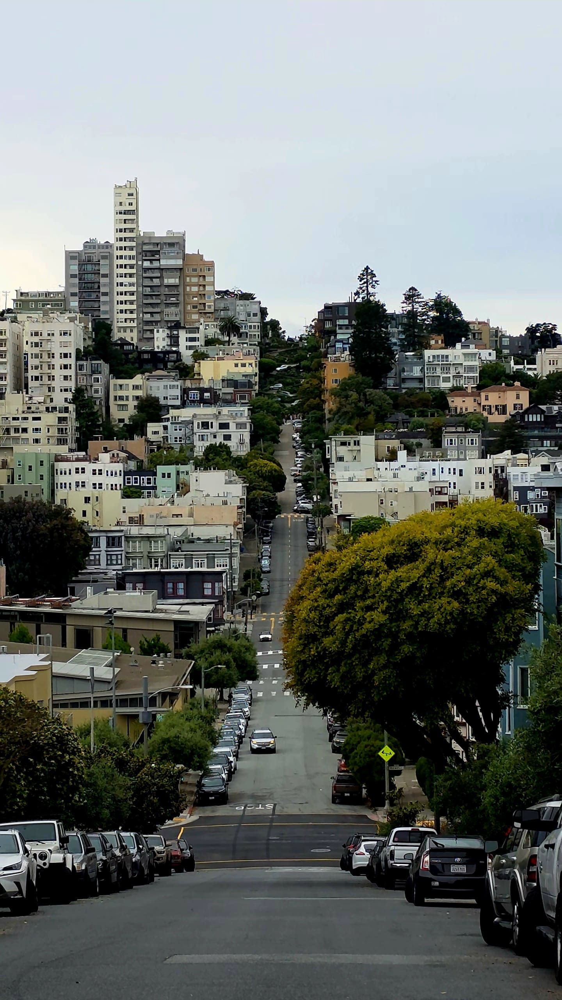
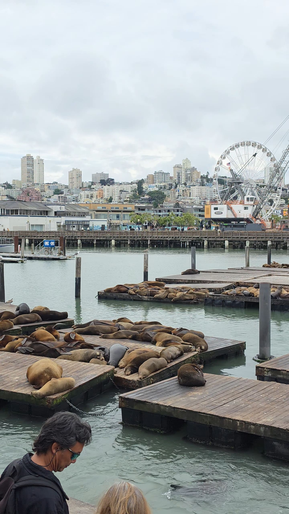
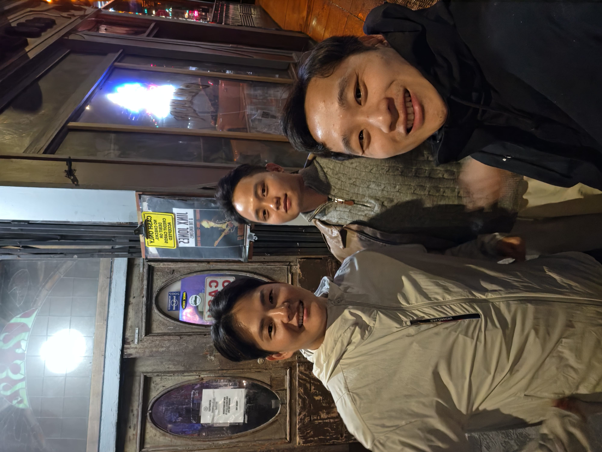
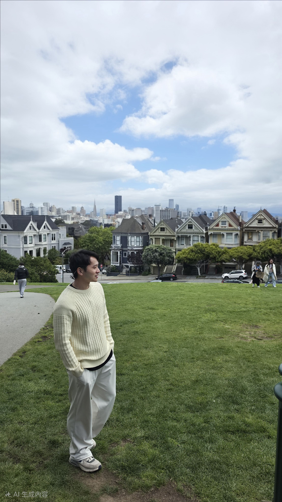
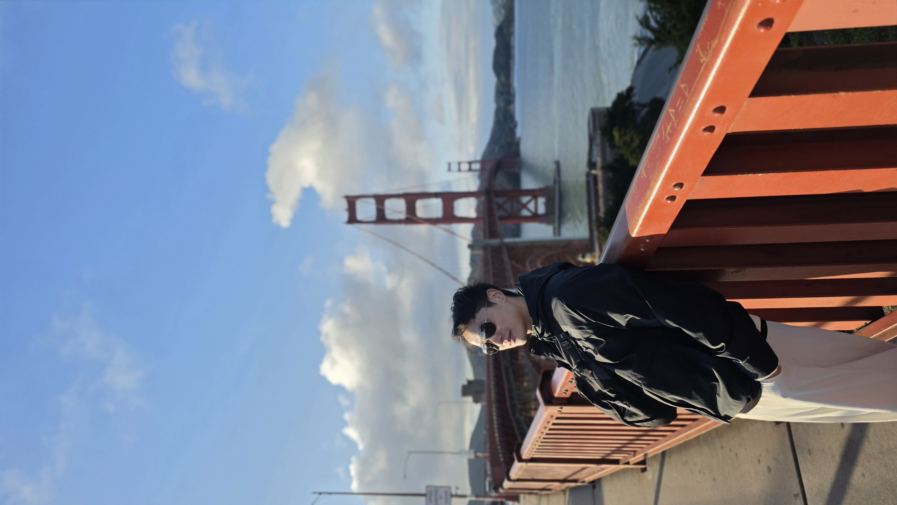
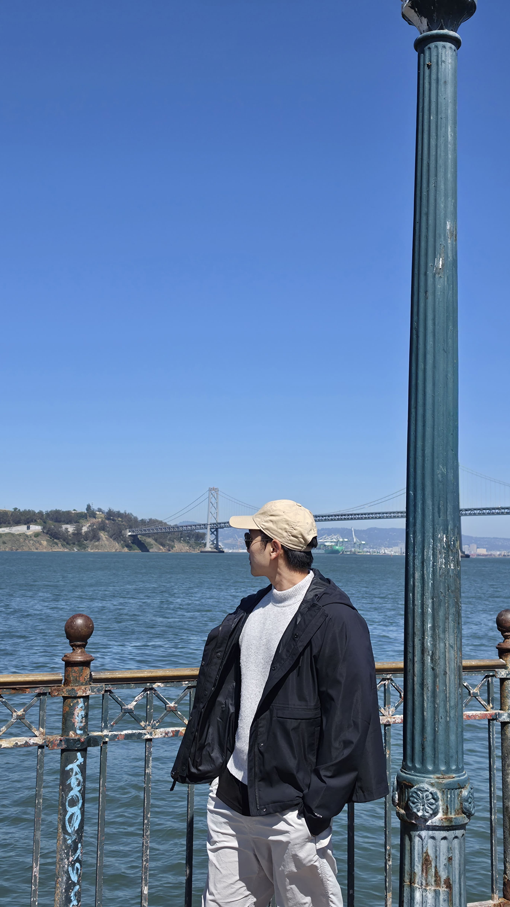
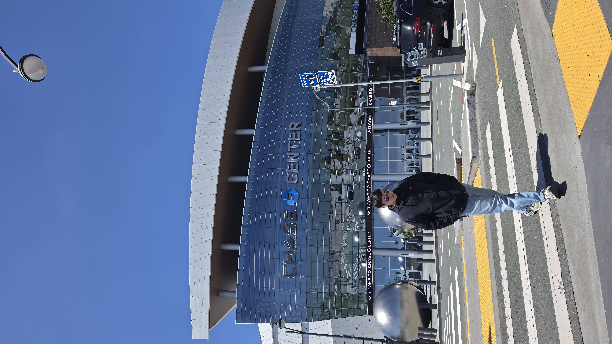
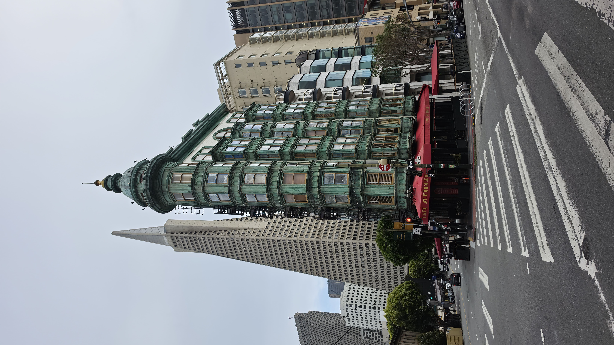
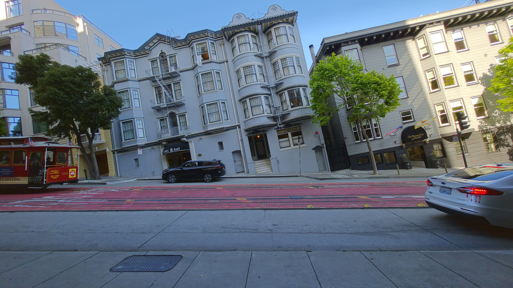

常常在電腦桌布看到的背景，就在我眼前
目前在美國遇到華人最多的城市
Day 1
因為Boise飛San Francisco的班機大誤點，整個抵達時間延後了將近4個小時。下午2點才抵達。
所以建議如果從其他州要來舊金山轉機回台灣或回其他國家，需要提早更多時間。

這次我入住China town 附近的青旅。在這青旅認識超多人，這裡交通也非常方便，但是要爬很多階梯。
因為出發已經是下午4點左右，決定去著名的Pier39，這裡有需多市集、攤販，也有人在表演，這裡也有很多海豹。

這裡也看得到惡魔島監獄，水流很湍急要游泳渡海非常困難，而且天氣也好冷。
第一天晚上就認識來自越南跟韓國的朋友，一起喝酒到很昏。

Day 2
第一站去 The painting ladys。
建築物都很美，在這裡生活很舒服。

順路去Golden Gate Park。
真心覺得美國每個東西都好大，公園佔地也超大，裡面超多美術館跟園區。很多運動場地，這也是為什麼美國一堆運動好手，很多場地可以運動。
最後去舊金山必來的Golden Gate Bridge。
網路上看到一堆美照，有許多不同的觀景角度可以探索，每個都好美，尤其今天天氣很好！

這天晚上民宿舉辦Taco night, 自己做Taco 來吃，又省下一餐
Day 3
一早前往Palace of Fine Arts，這裡每個時段都很美，我看過不同時間的照片，陽光灑下來，不同角度的光線都能襯托他的美！好多人在這裡外拍，我可以在這裏坐一個早上！
接著前往舊金山市政廳。很多當地華人在這裡拍婚紗，也好多人在這裡拍畢業照，真的超級美，主要是真的非常有文藝復興感。
晚上青旅舉辦Kahoot night，題目非常多樣，雖然只有三個人比賽，但真的很好玩！
Day 4
前往農夫市集，但很多都沒開

Day 5
一大早規劃去Twin Peaks，結果失策，風超大，雲層非常厚，不然天氣好一定超美。

接著坐車到NBA球迷必去的勇士主場Chase Center，雖然沒有比賽，但是逛逛內部的球衣店跟周邊就很滿足。
下午時間，開始慢慢探索這個城市的每個角落。


晚上是Friday night, 青旅有BBQ活動，又省下一餐。
Day 6
一早準備行李回台灣，謝謝美麗的San Francisco給我美好的回憶。
心得
舊金山地勢高低起伏超級劇烈，週圍許多高樓大廈，明顯感受到是科技發展中心，Waymo等自動駕駛在這非常密集廣泛使用，廣告宣傳也有許多跟AI科技相關，但又跟1960年代的建築、復古的叮叮車完美整併，天氣一直都感覺涼偏冷，儘管有陽光但風一來還是很冷，在這裡的花費也很驚人，交通、住宿、飲食都很高。說到治安，我住在china town旁邊，感受很安全，這裡很少看到殭屍或是奇怪的人，雖然還是有但比在西雅圖少很多，這裡是我看到最多亞洲人的地方。在這裡的民宿是我待過認識最多人、最多元的地方。非常融入這片城市。